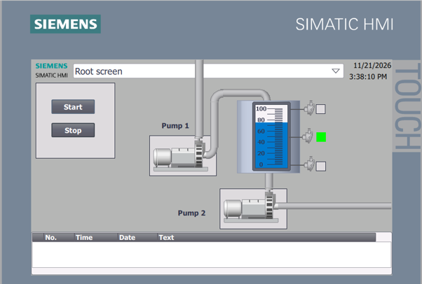
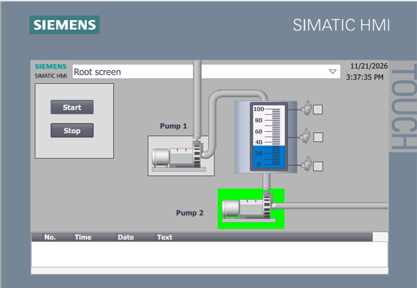
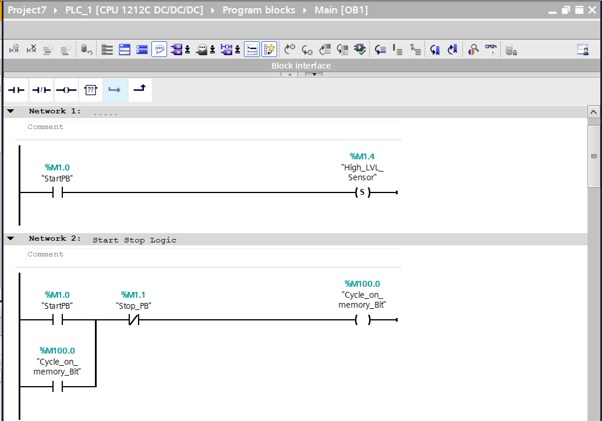
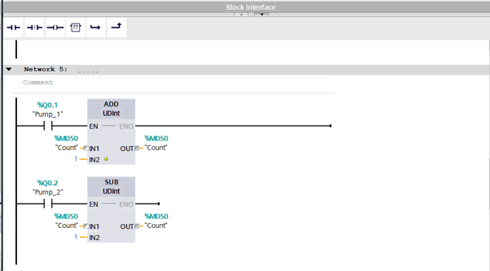
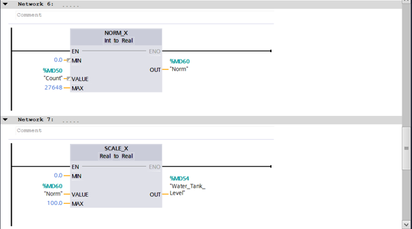

Operatörspanel (WinCC)
HMI-bild som visar tanknivå, pumpstatus och driftläge i realtid.

Aktiv pumpdrift
Visar aktuell pumputrustning som är i drift samt processen i realtid.

Start- och stopplogik
PLC-kod som hanterar säker start, stopp och återställning av processen.

Pumpstyrning
Automatisk växling mellan huvudpump och reservpump vid fel.

Nivåberäkning
Processvärden omvandlas till aktuellt nivåvärde i tanken.

Signalbehandling
Analoga signaler normaliseras och skalas till användbara processtal.

Nivåövervakning
Flera nivågränser används för reglering och larmhantering.

PLC-taggar
Strukturerad hantering av signaler, variabler och processdata i TIA Portal.